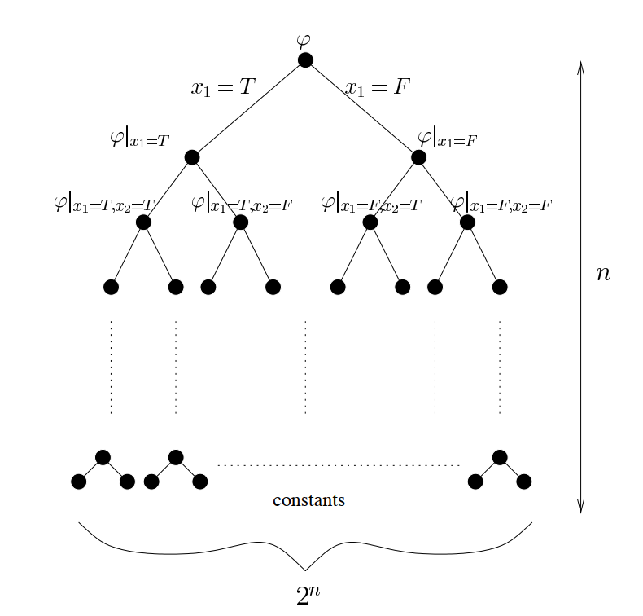

Lecture 4 - 2025 / 2 / 27
Unbalancing Lights
对于 n×n 的灯泡矩阵，每行、每列各有一个开关，作用是翻转完整的一行、一列。
现在对于一个初始状态，试图通过操作开关最大化亮灯数。
Claim: 对于每一种初始状态，存在操作方式使亮灯数量当 n→∞ 时渐进 2n2+2π1n3/2
首先均匀随机操作每一列的开关。用 Xij=±1 表示 (i,j) 位置的灯是否亮。
对于第 i 行，用 Zi=∑jXij，由于 Xi1,⋯,Xin 在 {1,−1} 中均匀随机，因此由随机游走结论：E[∣Zi∣]∼π2n
对于每一行的开关，如果操作后亮灯数量增多就操作它。从而根据期望的线性性：E[#on−#off]∼π2n3/2
从而 E[#on]∼2n2+2π1n3/2。
Large Girth and Chromatic Number
Definition (girth): 一个图 G 的周长为其中最小环的长度。
Definition (chromatic number): 一个图 G 的染色数为同色不相邻染色，最少需要的颜色数。
Theorem: ∀k,l，存在一张图的周长 ≥l，染色数 ≥k。
取随机图 G∼Gn,p，这里 p=n−1+1/l。
用 X 表示 G 的 <l 的环数量，Y 表示最大独立集的大小。
首先 E[X]=i=3∑l−12inipi≤i=3∑l−12i(np)i=i=3∑l−12ini/l=O(n1−1/l)=o(n)
从而 Pr[X≥2n]=o(1)。
另一方面，任取 y，
Pr[Y≥y]≤(yn)(1−p)(2y)≤ny⋅e−p(2y)≤(elnn−py/4)y
取 y=p8lnn=8lnn⋅n1−1/l=o(n)，就有 Pr[Y≥y]≤e−lnn⋅y=o(1)。
因此，根据 union bound，当 n 足够大，G 有 ≥21 的概率满足：
- <l 的环的数量不超过 2n
- 最大独立集的大小不超过 y=o(n)
从每个环中删去一个点，剩下的图 G′ 周长 ≥l，染色数 ≥yn=ω(1)，从而 n 充分大一定可以满足染色数 ≥k。
MAX3SAT
记 φ={(x1∨¬x2∨x3),⋯}，其中的每一项称为一个 clause。
Claim: 对于任一个 φ，存在一种赋值方法使至少 87∣φ∣ 的 clause 被满足。并且可以高效找出。

存在性只需要随机赋值即可证明。
依次考虑每一个 xi，由于 87∣φ∣=E[φ]=Pr[x1=T]⋅E[φ∣x1=T]+Pr[x1=F]⋅E[φ∣x1=F]
从而一定能有一种条件期望 ≥87∣φ∣，递归下去寻找即可。
这种方法叫做 Method of conditional probabilities。
4-Cliques / Triangles
Definition (threshold): 称 p(n) 是性质 Q 的 threshold，当且仅当：
p≫p(n)⟹Pr[G∈Gn,p has Q]→1 as n→∞p≪p(n)⟹Pr[G∈Gn,p has Q]→0 as n→∞
对于图 G∼Gn,p，设 X 为其中的 4-Clique 的个数，XC=0/1 代表 C 是不是 4-Clique。
E[X]=(4n)p6=Θ(n4p6)
Theorem: p(n)=n−2/3 是包含 4-Clique 的 threshold。
首先 p≪p(n) 时，由于 E[X]→0，因此 Pr[X≥1]≤E[X]→0。
当 p≫p(n) 时，Pr[X=0]≤Pr[∣X−E[X]∣≥E[X]]≤E[X]2Var[X]。
由于
Var[X]=C∑Var[XC]+C,D∑Cov[XC,XD]≤Θ(n4p6)+(6n)(26)p11+(5n)(35)p9=Θ(n4p6)+Θ(n6p11)+Θ(n5p9)
从而 E[X]2Var[X]=Θ(n−4p−6)+Θ(n−2p−1)+Θ(n−3p−3)→0。
该方法不适用于密集程度“不均匀”的图。